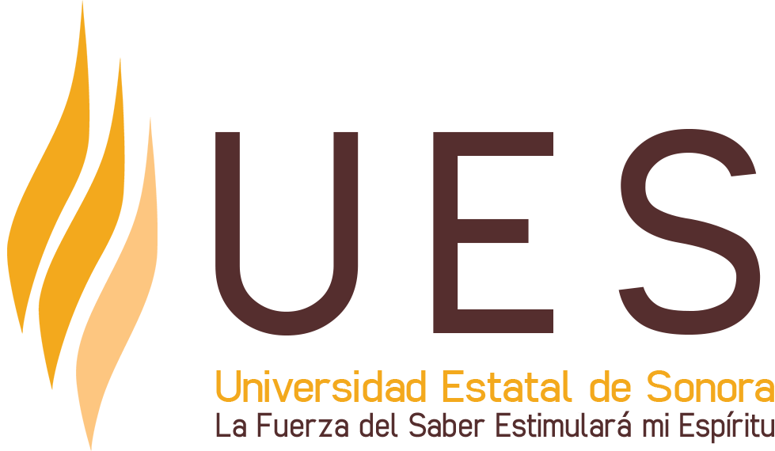

Reportar los hallazgos de la observación de una práctica docente en una clase del sistema de EMS, de acuerdo a los principios éticos para la conducción de observaciones; así como, atendiendo a las principios éticos y afectivos para proporcionar retroalimentración a pares.

- Revisar el material proporcionado en recursos y contestar el crucigrama sobre los diversos formatos que existen para la observación de clase; y la guía y etiqueta para los observadores de clases en inglés.
Recursos
- Observación de la práctica de aula en Educación Media Superior, Razo, A (2015).
- Guidelines and Etiquette for Observers
- Crucigrama Observación de clase en EMS
Criterios de evaluación de la actividad:
- Respuestas correctas del crucigrama